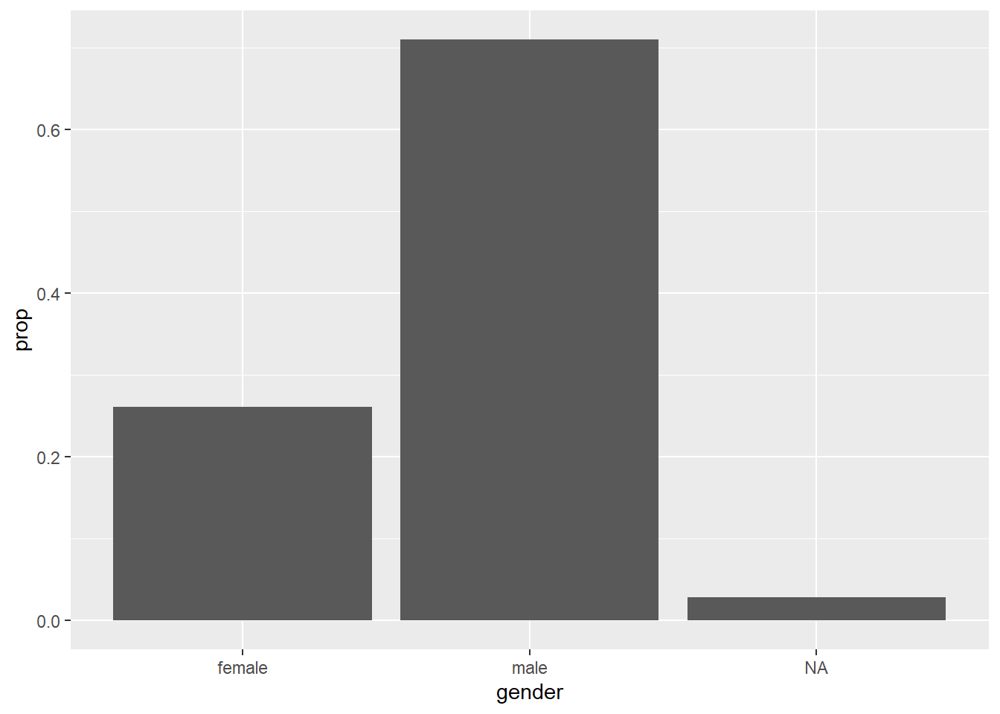
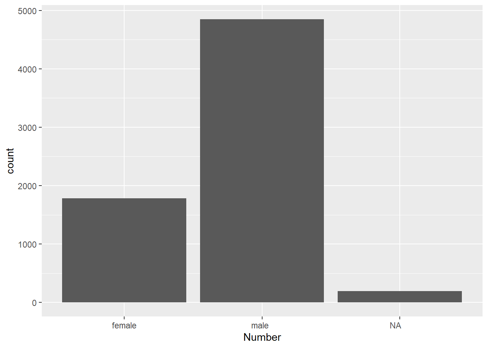

This script checks assigns professor names as male or female. Because
there are no self-reports of gender in the Narcis database, we infer a
professor’s gender from the first name filed in the database using
Genderize.io API.
Load the libraries that we need:
library(groundhog)
packages_to_load <- c("readr", "dplyr",
"stringr",
"digest",
"jsonlite")
groundhog.library(packages_to_load, date = "2023-12-01")
Tidy up professor data
from NARCIS
Load the professor profiles:
load("raw_data/media_profs_profiles.rda")
profs <- read_csv("raw_data/dutch_profs_urls.csv")
# merge the profs with their ORCIDs
colnames(profs)[c(1,7)] <- c("id", "profile_id")
profs_full <- merge(profs,
metadf[, c(1:4, 361)],
by = "profile_id")
Define a function for
gender inference
genderize_io_function <- function(name,
api_key = "",
country_id = ""){
# call the api using the name
name_call <- paste0("https://api.genderize.io?name=", name)
# if country ID provided
if (country_id != ""){
name_call <- paste0(name_call, "&country_id=", toupper(country_id))
}
# if API key provided
if (api_key !=""){
name_call <- paste0(name_call, "&apikey=", api_key, "")
}
output <- fromJSON(txt=name_call)
# if no gender predicted
if(is.null(output[["gender"]])){
output[["gender"]] <- NA
}
output <- data.frame(output)
return(output)
}
Inferring gender
# fill in own api key
genderize_api_key <- ''
# list of names
names <- unique(profs_full$first)
prof_name_gender <- data.frame(matrix(NA, nrow = 0, ncol = 4))
for (i in 1:length(names)){
name <- names[i]
output <- genderize_io_function(name,
api_key = genderize_api_key,
country_id = "NL")
prof_name_gender <- rbind(prof_name_gender,
output)
print(paste("done with", i, "out of", length(names)))
}
Bind to prof data:
# tidy up the colnames
colnames(prof_name_gender)[2] <- "first"
# merge the prof data with gender inference
profs_full_gender <- merge(profs_full,
prof_name_gender,
by = "first",
all.x = TRUE)
# reorder the columns back
colnames_rearrange <- c(colnames(profs_full), colnames(prof_name_gender)[-2])
profs_full_gender <- profs_full_gender[colnames_rearrange]
# write this out
#saveRDS(profs_full_gender, "processed_data/profs_full_gender.RDS")
#write_csv(profs_full_gender, "processed_data/profs_full_gender.csv")
Plots
profs_full_gender <- readRDS("processed_data/profs_full_gender.RDS")
Plot the proportions:
ggplot(profs_full_gender) +
geom_bar(mapping = aes(x = gender, y = after_stat(prop), group = 1), stat = "count")

Plot the counts:
ggplot(profs_full_gender, aes(format(gender))) +
geom_bar(stat = "count") +
labs(x = "Number")

LS0tDQp0aXRsZTogIlByb2ZfZ2VuZGVyIg0KYXV0aG9yOiAiQW5hIE1hY2Fub3ZpYyINCmRhdGU6ICIyMDIzLTEyLTE5Ig0KLS0tDQoNClRoaXMgc2NyaXB0IGNoZWNrcyBhc3NpZ25zIHByb2Zlc3NvciBuYW1lcyBhcyBtYWxlIG9yIGZlbWFsZS4gDQpCZWNhdXNlIHRoZXJlIGFyZSBubyBzZWxmLXJlcG9ydHMgb2YgZ2VuZGVyIGluIHRoZSBOYXJjaXMgZGF0YWJhc2UsIA0Kd2UgaW5mZXIgYSBwcm9mZXNzb3IncyBnZW5kZXIgZnJvbSB0aGUgZmlyc3QgbmFtZSBmaWxlZCBpbiB0aGUgZGF0YWJhc2UgdXNpbmcNCkdlbmRlcml6ZS5pbyBBUEkuDQoNCmBgYHtyIGluY2x1ZGUgPSBGfQ0Ka25pdHI6Om9wdHNfY2h1bmskc2V0KGVjaG8gPSBUUlVFKQ0KI2tuaXRyOjpvcHRzX2NodW5rJHNldChldmFsID0gRkFMU0UpDQprbml0cjo6b3B0c19jaHVuayRzZXQod2FybmluZyA9IEZBTFNFKQ0Ka25pdHI6Om9wdHNfY2h1bmskc2V0KG1lc3NhZ2UgPSBGQUxTRSkNCmBgYA0KDQpMb2FkIHRoZSBsaWJyYXJpZXMgdGhhdCB3ZSBuZWVkOg0KYGBge3Igd2FybmluZyA9IEYsIG1lc3NhZ2UgPSBGLCBldmFsID0gVH0NCmxpYnJhcnkoZ3JvdW5kaG9nKQ0KcGFja2FnZXNfdG9fbG9hZCA8LSBjKCJyZWFkciIsICJkcGx5ciIsIA0KICAgICAgICAgICAgICAgICAgICAgICJzdHJpbmdyIiwNCiAgICAgICAgICAgICAgICAgICAgICAiZGlnZXN0IiwNCiAgICAgICAgICAgICAgICAgICAgICAianNvbmxpdGUiKQ0KZ3JvdW5kaG9nLmxpYnJhcnkocGFja2FnZXNfdG9fbG9hZCwgZGF0ZSA9ICIyMDIzLTEyLTAxIikNCmBgYA0KDQojIFRpZHkgdXAgcHJvZmVzc29yIGRhdGEgZnJvbSBOQVJDSVMNCg0KTG9hZCB0aGUgcHJvZmVzc29yIHByb2ZpbGVzOg0KYGBge3IgbWVzc2FnZSA9IEYsIHdhcm5pbmcgPSBGLCBldmFsID0gRn0NCmxvYWQoInJhd19kYXRhL21lZGlhX3Byb2ZzX3Byb2ZpbGVzLnJkYSIpDQpwcm9mcyA8LSByZWFkX2NzdigicmF3X2RhdGEvZHV0Y2hfcHJvZnNfdXJscy5jc3YiKQ0KDQojIG1lcmdlIHRoZSBwcm9mcyB3aXRoIHRoZWlyIE9SQ0lEcw0KY29sbmFtZXMocHJvZnMpW2MoMSw3KV0gPC0gYygiaWQiLCAicHJvZmlsZV9pZCIpDQoNCnByb2ZzX2Z1bGwgPC0gbWVyZ2UocHJvZnMsDQogICAgICAgICAgICAgICAgICAgIG1ldGFkZlssIGMoMTo0LCAzNjEpXSwNCiAgICAgICAgICAgICAgICAgICAgYnkgPSAicHJvZmlsZV9pZCIpDQpgYGANCg0KIyBEZWZpbmUgYSBmdW5jdGlvbiBmb3IgZ2VuZGVyIGluZmVyZW5jZQ0KYGBge3IgZXZhbCA9IEZ9DQpnZW5kZXJpemVfaW9fZnVuY3Rpb24gPC0gZnVuY3Rpb24obmFtZSwNCiAgICAgICAgICAgICAgICAgICAgICAgICAgICAgICAgICBhcGlfa2V5ID0gIiIsDQogICAgICAgICAgICAgICAgICAgICAgICAgICAgICAgICAgY291bnRyeV9pZCA9ICIiKXsNCiAgIyBjYWxsIHRoZSBhcGkgdXNpbmcgdGhlIG5hbWUNCiAgbmFtZV9jYWxsIDwtIHBhc3RlMCgiaHR0cHM6Ly9hcGkuZ2VuZGVyaXplLmlvP25hbWU9IiwgbmFtZSkNCiAgDQogICMgaWYgY291bnRyeSBJRCBwcm92aWRlZA0KICBpZiAoY291bnRyeV9pZCAhPSAiIil7DQogICAgbmFtZV9jYWxsIDwtIHBhc3RlMChuYW1lX2NhbGwsICImY291bnRyeV9pZD0iLCB0b3VwcGVyKGNvdW50cnlfaWQpKQ0KICB9DQogICMgaWYgQVBJIGtleSBwcm92aWRlZA0KICBpZiAoYXBpX2tleSAhPSIiKXsNCiAgICBuYW1lX2NhbGwgPC0gcGFzdGUwKG5hbWVfY2FsbCwgIiZhcGlrZXk9IiwgYXBpX2tleSwgIiIpDQogIH0NCiAgb3V0cHV0IDwtIGZyb21KU09OKHR4dD1uYW1lX2NhbGwpDQogICMgaWYgbm8gZ2VuZGVyIHByZWRpY3RlZA0KICBpZihpcy5udWxsKG91dHB1dFtbImdlbmRlciJdXSkpew0KICAgIG91dHB1dFtbImdlbmRlciJdXSA8LSBOQQ0KICB9DQogIG91dHB1dCA8LSBkYXRhLmZyYW1lKG91dHB1dCkNCiAgcmV0dXJuKG91dHB1dCkNCn0NCmBgYA0KDQoNCiMgSW5mZXJyaW5nIGdlbmRlcg0KYGBge3Igd2FybmluZyA9IEYsIG1lc3NhZ2UgPSBGLCBldmFsID0gRn0NCiMgZmlsbCBpbiBvd24gYXBpIGtleQ0KZ2VuZGVyaXplX2FwaV9rZXkgPC0gJycNCg0KIyBsaXN0IG9mIG5hbWVzDQpuYW1lcyA8LSB1bmlxdWUocHJvZnNfZnVsbCRmaXJzdCkNCg0KcHJvZl9uYW1lX2dlbmRlciA8LSBkYXRhLmZyYW1lKG1hdHJpeChOQSwgbnJvdyA9IDAsIG5jb2wgPSA0KSkNCg0KZm9yIChpIGluIDE6bGVuZ3RoKG5hbWVzKSl7DQogIG5hbWUgPC0gbmFtZXNbaV0NCiAgb3V0cHV0IDwtIGdlbmRlcml6ZV9pb19mdW5jdGlvbihuYW1lLA0KICAgICAgICAgICAgICAgICAgICAgIGFwaV9rZXkgPSBnZW5kZXJpemVfYXBpX2tleSwNCiAgICAgICAgICAgICAgICAgICAgICBjb3VudHJ5X2lkID0gIk5MIikNCiAgDQogIHByb2ZfbmFtZV9nZW5kZXIgPC0gcmJpbmQocHJvZl9uYW1lX2dlbmRlciwNCiAgICAgICAgICAgICAgICAgICAgICAgICAgICBvdXRwdXQpDQogIHByaW50KHBhc3RlKCJkb25lIHdpdGgiLCBpLCAib3V0IG9mIiwgbGVuZ3RoKG5hbWVzKSkpDQp9DQpgYGANCg0KQmluZCB0byBwcm9mIGRhdGE6DQpgYGB7ciBldmFsID0gRn0NCiMgdGlkeSB1cCB0aGUgY29sbmFtZXMNCmNvbG5hbWVzKHByb2ZfbmFtZV9nZW5kZXIpWzJdIDwtICJmaXJzdCINCg0KIyBtZXJnZSB0aGUgcHJvZiBkYXRhIHdpdGggZ2VuZGVyIGluZmVyZW5jZQ0KcHJvZnNfZnVsbF9nZW5kZXIgPC0gbWVyZ2UocHJvZnNfZnVsbCwNCiAgICAgICAgICAgICAgICAgICAgICAgICAgIHByb2ZfbmFtZV9nZW5kZXIsDQogICAgICAgICAgICAgICAgICAgICAgICAgICBieSA9ICJmaXJzdCIsIA0KICAgICAgICAgICAgICAgICAgICAgICAgICAgYWxsLnggPSBUUlVFKQ0KDQojIHJlb3JkZXIgdGhlIGNvbHVtbnMgYmFjaw0KY29sbmFtZXNfcmVhcnJhbmdlIDwtIGMoY29sbmFtZXMocHJvZnNfZnVsbCksIGNvbG5hbWVzKHByb2ZfbmFtZV9nZW5kZXIpWy0yXSkNCnByb2ZzX2Z1bGxfZ2VuZGVyIDwtIHByb2ZzX2Z1bGxfZ2VuZGVyW2NvbG5hbWVzX3JlYXJyYW5nZV0NCg0KIyB3cml0ZSB0aGlzIG91dA0KI3NhdmVSRFMocHJvZnNfZnVsbF9nZW5kZXIsICJwcm9jZXNzZWRfZGF0YS9wcm9mc19mdWxsX2dlbmRlci5SRFMiKQ0KI3dyaXRlX2Nzdihwcm9mc19mdWxsX2dlbmRlciwgInByb2Nlc3NlZF9kYXRhL3Byb2ZzX2Z1bGxfZ2VuZGVyLmNzdiIpDQpgYGANCg0KIyBQbG90cyANCg0KYGBge3IgZXZhbCA9IFRSVUV9DQpwcm9mc19mdWxsX2dlbmRlciA8LSByZWFkUkRTKCJwcm9jZXNzZWRfZGF0YS9wcm9mc19mdWxsX2dlbmRlci5SRFMiKQ0KYGBgDQoNCg0KUGxvdCB0aGUgcHJvcG9ydGlvbnM6DQpgYGB7ciBldmFsID0gVFJVRX0NCmdncGxvdChwcm9mc19mdWxsX2dlbmRlcikgKyANCiAgZ2VvbV9iYXIobWFwcGluZyA9IGFlcyh4ID0gZ2VuZGVyLCB5ID0gYWZ0ZXJfc3RhdChwcm9wKSwgZ3JvdXAgPSAxKSwgc3RhdCA9ICJjb3VudCIpDQpgYGANCg0KDQpQbG90IHRoZSBjb3VudHM6DQpgYGB7ciBldmFsID0gVFJVRX0NCmdncGxvdChwcm9mc19mdWxsX2dlbmRlciwgYWVzKGZvcm1hdChnZW5kZXIpKSkgKw0KICAgIGdlb21fYmFyKHN0YXQgPSAiY291bnQiKSArDQogICAgbGFicyh4ID0gIk51bWJlciIpDQpgYGANCg0KDQo=